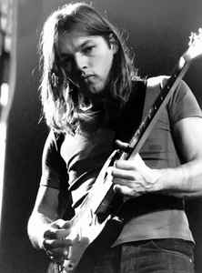
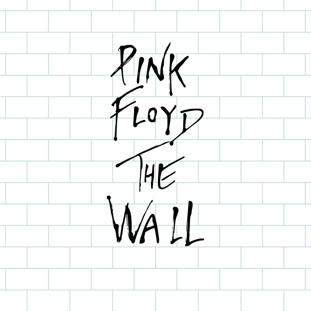
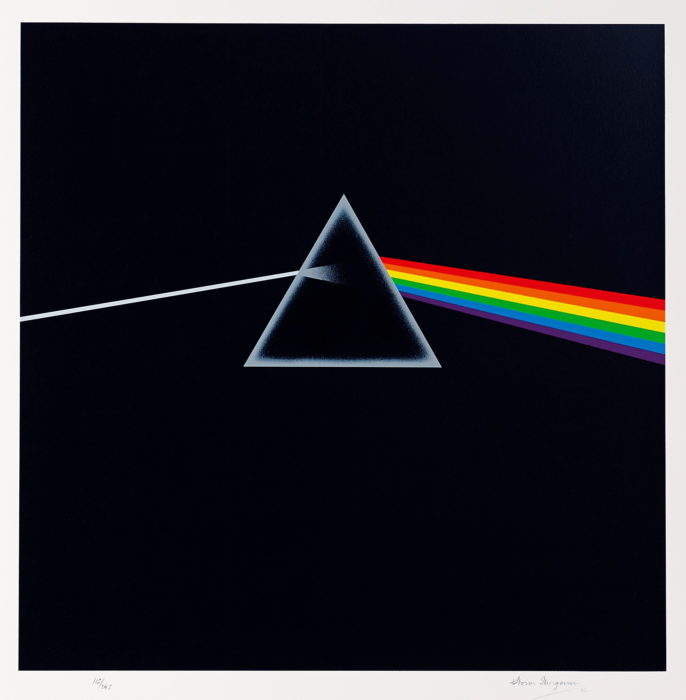

David Gilmour est un guitariste, claviériste, chanteur, producteur de disques et auteur-compositeur-interprète britannique né le 6 mars 1946 à Cambridge. Bercé par le rock and roll de Bill Haley, David Gilmour, qui effectue ses études au Cambridge Collège of arts and technology, rencontre Syd Barrett. Ils reprennent des morceaux de The Beatles ou encore des The Rolling Stones. Alors que David Gilmour joue dans plusieurs groupes (dont les Flowers qui vont tourner essentiellement en France et en Espagne) entre 1963 et 1966, Syd Barrett le convie à l'enregistrement du deuxième album de The Pink Flyod, le groupe de rock psychédélique qu'il a fondé en 1965 avec Roger Waters, Rick Wright et Nick Mason. Ce dernier, batteur, qui assiste impuissant à la destruction de Syd Barrett, grand consommateur de drogues, demande à David Gilmour de remplacer son ami. Syd Barrett et David Gilmour se retrouvent ainsi tous deux sur le titre "A saucerful of secrets" sans pour autant avoir joué ensemble. Dès lors, l'impact de David Gilmour devient considérable sur la formation notamment avec le troisième album "Ummagumma" (1969), un double album qui comprend des enregistrements publics et des expérimentations solos.

Sombrant dans la folie et adepte des substances hallucinogènes, Syd manque régulièrement à l’appel. Pour palier à ses absences, le groupe décide d'embaucher David Gilmour. La fin de l’ère Barrett est ainsi marquée le 26 janvier 1968 lorsque le groupe décide d’assurer le concert de Southampton sans lui. Il enregistrera tout de même deux albums en 1970, mais se retirera de la vie publique pour s'isoler dans la banlieue de Cambridge et s'adonner à la peinture. Nick Mason, le batteur du groupe, se souvient d’un jour où un homme chauve et bedonnant s'était introduit dans le studio en plein enregistrement. Les membres du groupe n'avaient pas reconnu leur ancien ami, qui avait totalement sombré dans la folie. David Gilmour, qui sort un nouvel album solo "About face" (1984), se retrouve avec Roger Waters, qui estimant que le groupe est allé au bout de ses compostions psychédéliques quitte la formation. Roger Waters et David Gilmour entrent alors dans un conflit juridique qui tourne à l'avantage du dernier. Deux albums parviennent néanmoins à sortir : "A momentary lapse of reason" (avec de nouveaux musiciens tel que John Helliwell, le saxophoniste de Supertramp) en 1987 et "The division bell" en 1994. En 1995, c'est la sortie d'un album live "Pulse". Dix ans seront nécessaire à The Pink Floyd pour se reformer. Ce sera sur l'insistance de Bob Geldof, l'organisateur du Live 8. Un moment inoubliable pour les fans, qui attendent, fébriles, l'album improbable. Dans l'attente, David Gilmour sort son troisième album solo, " On an island ", et se produit en France, toujours en 2006. En 2008, il revient avec un nouvel album qui s'appelle "Live in Gdansk". Deux ans plus tard, l'artiste collabore à "Metallic Spheres", le nouvel album du groupe électro britannique The Orb. Le 22 mai 2008, David Gilmour reçoit le prix Ivor Novello 2008 pour l’ensemble de sa carrière. Plus tard, la même année, lors des célèbres Q Awards, on lui décerne un prix pour sa contribution exceptionnelle à la musique. Gilmour dédie son prix à la mémoire de Richard Wright, claviériste, compositeur et chanteur des Floyd, et son grand ami et complice, mort d’un cancer, le 15 septembre 2008. David Gilmour poursuit son action caritative. Non seulement, il renonce à ses cachets quand il joue (ou aide) dans ces concerts, mais il lui arrive de reverser une partie des bénéfices de ses disques (ou d’une partie de la vente de sa maison, au profit de Crisis …) à des associations humanitaires.

Réalisé par Bastien Xuereb